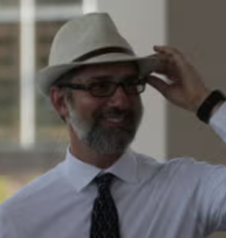

Who reads
The readings collected here are produced collaboratively, co-led by David M. Berry and Mark C. Marino, and draw on the wider Critical Code Studies community.

David M. Berry

Mark C. Marino
The CCS Working Group
Critical Code Studies has developed since 2010 through the Critical Code Studies Working Group, an online collaboratory that convenes scholars from literary studies, computer science, media studies, and the digital humanities to read code together, and through the biennial CCS conferences, now in their ninth iteration (2026). The current threads include readings of ELIZA's recovered source and the question of what CCS can read once code is generated rather than written.
To propose a reading, contribute to one, or simply get in touch, write to either of the co-leads above, or open an issue on the GitHub organisation.